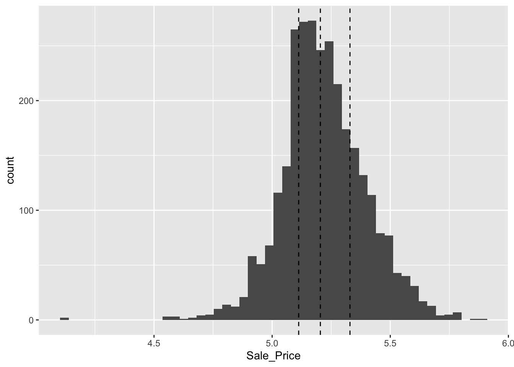

library(tidymodels)
set.seed(501)
ames_split <- initial_split(ames, prop=.8)
ames_split<Training/Testing/Total>
<2344/586/2930>When you start off modeling some data, you can potentially do an infinite number of things to it e.g. parameter estimation, model selection, tuning, performance QA, etc. However, if you continuously do these tasks to any and all parts of your data simultaneously, you will introduce bias into the model through leakage e.g. if you use some of your test data in model parameter tuning. This chapter suggests setting a mental heuristic for creating a data budget that you can spend.
A common first step is “splitting” data into a training and testing set.
Example using rsample to get an 80-20 split:
library(tidymodels)
set.seed(501)
ames_split <- initial_split(ames, prop=.8)
ames_split<Training/Testing/Total>
<2344/586/2930>Use the functions below to get your data into split dfs:
ames_train <- training(ames_split)
ames_test <- testing(ames_split)In the case of classification with imbalanced classes, stratified classification can be used to do splitting separately for each class and then combining the result. For regression, a similar approach is to stratify by quantiles:
qs <- quantile(ames$Sale_Price)[2:4]
ames %>%
ggplot(aes(x=Sale_Price)) +
geom_histogram(bins=50) +
geom_vline(xintercept = qs, lty="dashed")
Within each, it will run the sampling for train and test :)
ames_split <- initial_split(ames, prop = 0.80, strata = Sale_Price)
ames_train <- training(ames_split)
ames_test <- testing(ames_split)
dim(ames_train)[1] 2342 74There is very little downside to using stratified sampling
Note that for time series data, you can use initial_time_split() to create a train test split; this assumes that you want later data to be forecasted and earlier data to be the training data.
It’s also important to separate your notion of a test set from a validation set. A validation set is what you use to validate your training models, i.e. you use it to tune parameters. A test set must remain an unbiased (unseen) data set that the final model is evaluated on.
When data points in the outcome are structurally or conceptually related to each other, this might be a case for multilevel modeling. e.g. longitudinal data where one participant has multiple time points/repeated measures (or a mobile phone study where one participant has many EMA responses 😉)